PSYC 2530: Eugenics and Psychology
A primer to historical connections
Last compiled 01/27/22
Matthew J. C. Crump
Last compiled 01/27/22
Read chapter 3 Eugenics and Psychology from the textbook.
History is full of problematic efforts to “improve” society
Problems include inequality and injustices
Not all groups benefit equally from the improvements
Oppressed groups have been targets of human rights violations in the name of improvement
Psychology considers itself a progressive science, but also has a long history of promoting problematic ways to improve society
Chapter 4 Eugenic Scientific Utopias Filled with Socially Engineered Happy Productive People
In 1880, why was Galton so interested in mental imagery?
A quote from his paper:
The larger object of my inquiry is to elicit facts that shall define the natural varieties of mental disposition in the two sexes and in different races, and afford trustworthy data as to the relative frequency with which different faculties are inherited in different degrees.
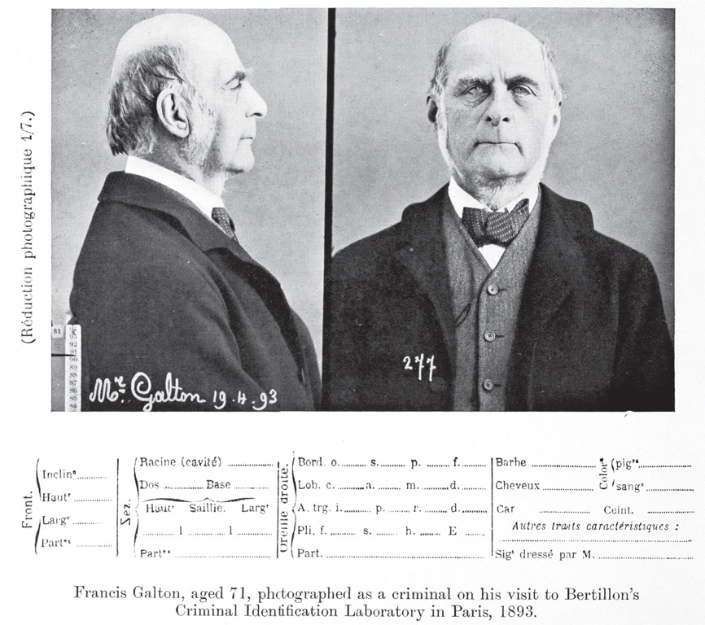
Galton suggests that people could be selectively bred to improve the “stock” of the human race
Focused on the “highest, noble” traits of “civilized” mankind, such as intellect and general intelligence
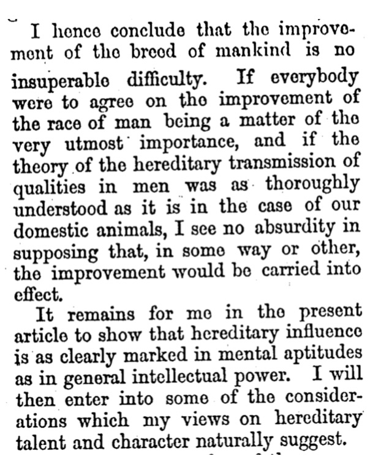
Galton studied genealogies of “Englishmen of distinction” to conclude they had inherited superior traits
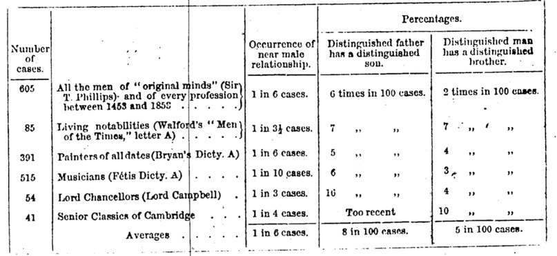
Galton contrasted the “great men of civilized countries” with the “barbarians” and “savages” of “uncivilized countries”
E.g., American Indians are naturally cold, melancholic, patient and taciturn…contain the minimum of affectionate and social qualities compatible with the continuance of their race
Invoked fears about “the extent to which moral monstrosities can be bred”
Advocated that Eugenics become accepted as a worldwide modern religion so that a holy war could be declared against the unfit
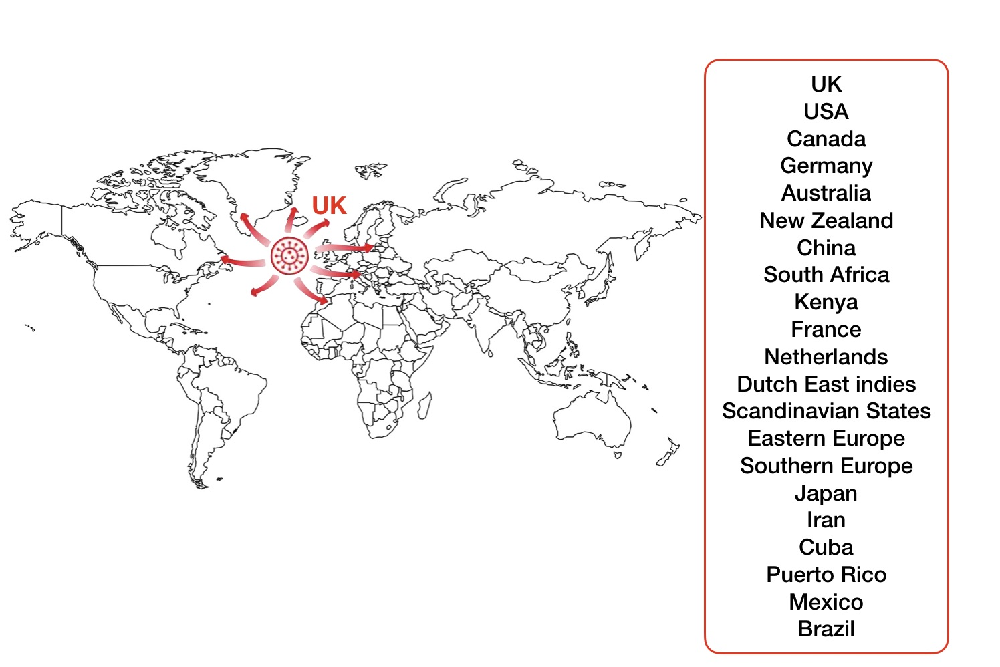
Excellent overview of the formation, development, and nuances of Eugenics movements in many different countries
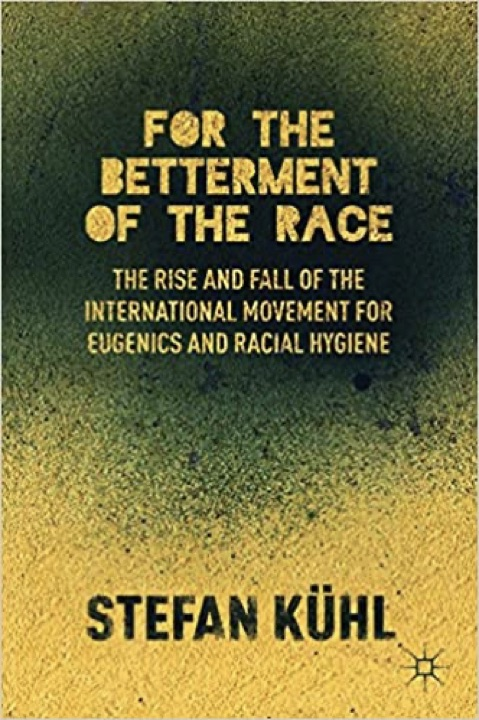
Part I explores national/colonial themes:
Eugenics in Britain: The View from the Metropole
South Asia’s Eugenic Past
Eugenics in Australia and New Zealand: Laboratories of Racial Science
Eugenics in China and Hong Kong: Nationalism and Colonialism, 1890s–1940s
South Africa: Paradoxes in the Place of Race
Eugenics in Colonial Kenya
Eugenics in Postcolonial Southeast Asia
German Eugenics and the Wider World: Beyond the Racial State
Eugenics in France and the Colonies
Eugenics in the Netherlands and the Dutch East Indies
The Scandinavian States: Reformed Eugenics Applied
The First-Wave Eugenic Revolution in Southern Europe: Science sans frontières
Eugenics in Eastern Europe, 1870s–1945
Eugenics in Russia and the Soviet Union
Eugenics in Japan: Sanguinous Repair
Eugenics in Interwar Iran
Eugenics and the Jews
Eugenics Policy and Practice in Cuba, Puerto Rico, and Mexico
The Path of Eugenics in Brazil: Dilemmas of Miscegenation
Eugenics in the United States
Eugenics in Canada: A Checkered History, 1850s–1990s
Part II explores transnational themes:
The Darwinian Context: Evolution and Inheritance Diane B. Paul and James Moore
Anthropology, Colonialism, and Eugenics Philippa Levine
Race, Science, and Eugenics in the Twentieth Century Marius Turda
Eugenics and the Science of Genetics Nils Roll‐Hansen
Fertility Control: Eugenics, Neo-Malthusianism, and Feminism Susanne Klausen and Alison Bashford
Disability, Psychiatry, and Eugenics Mathew Thomson
Eugenics and the State: Policy-Making in Comparative Perspective Véronique Mottier
Internationalism, Cosmopolitanism, and Eugenics Alison Bashford
Gender and Sexuality: A Global Tour and Compass Alexandra Minna Stern
Eugenics and genocide A. Dirk Moses and Dan Stone
A few English language eugenics journals include:
The Journal of Race Development (whose first editor was the first president of the American Psychological Association, Granville Stanley Hall)
Annals of Eugenics (which was renamed Annals of Human Genetics).
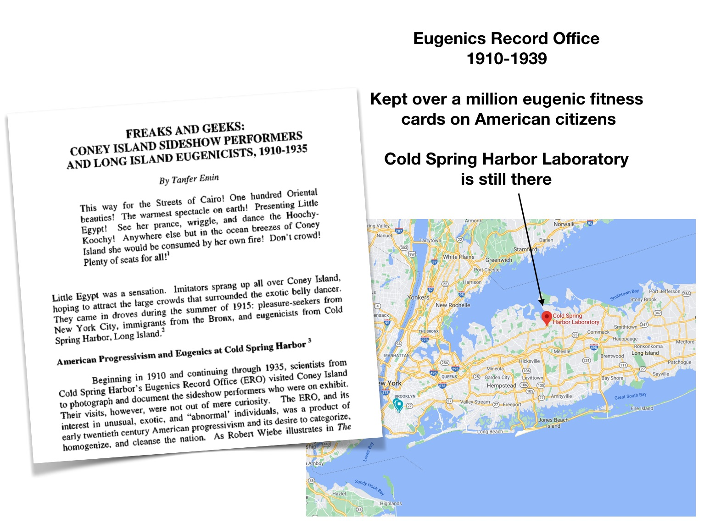
Movies, books, posters, state fairs, trained eugenics promoters, textbooks, etc.
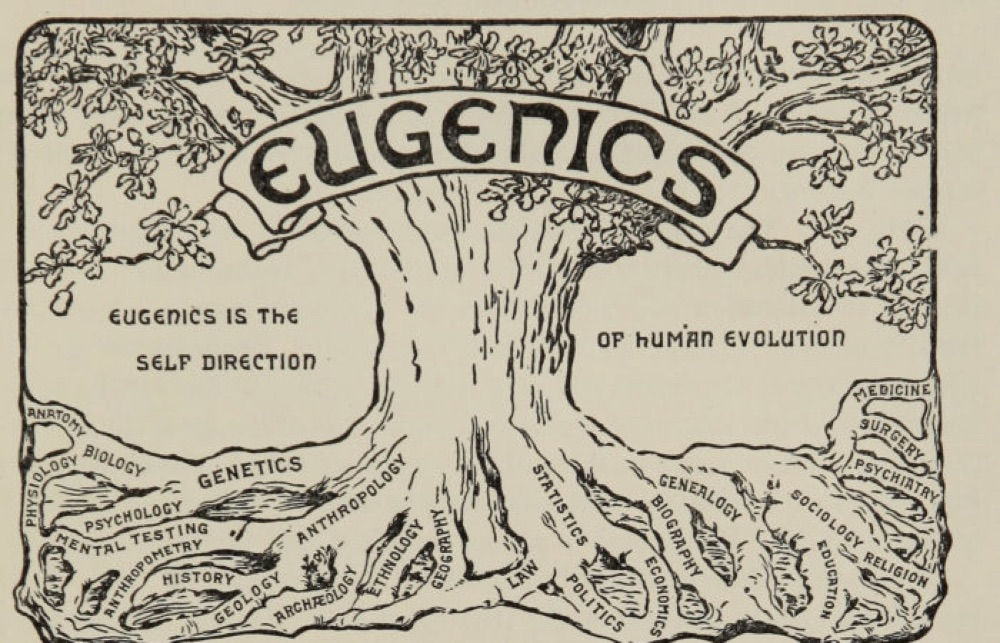
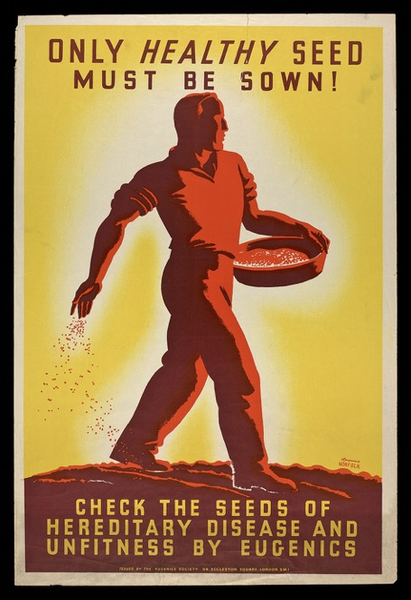
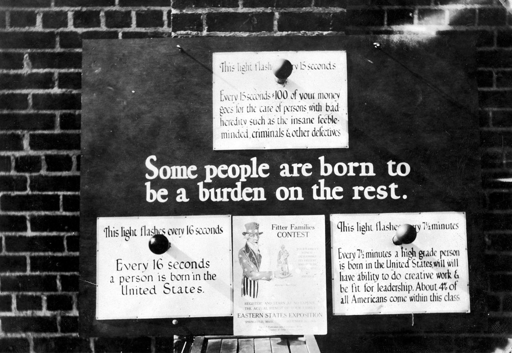
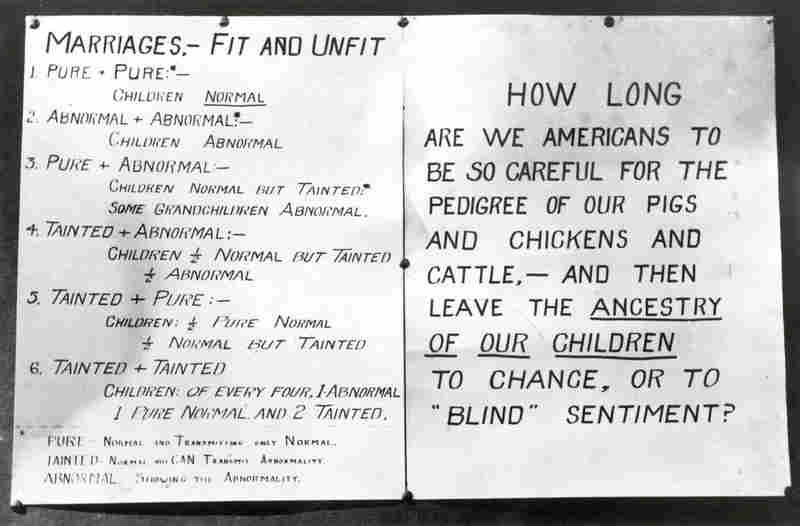
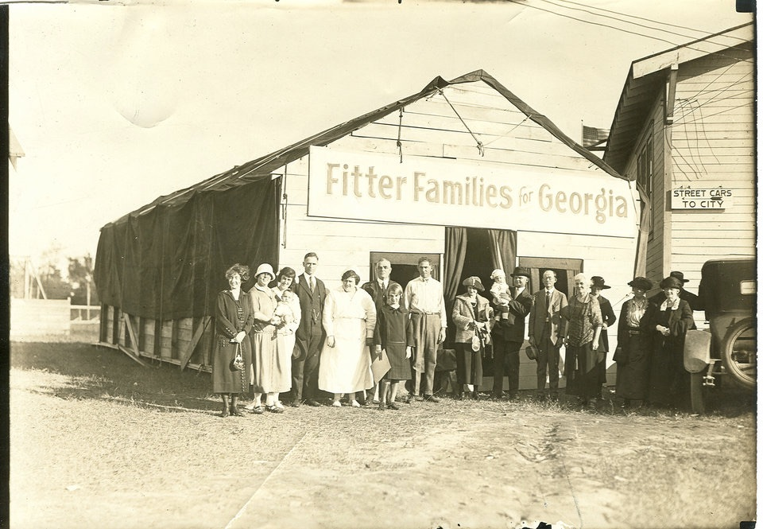
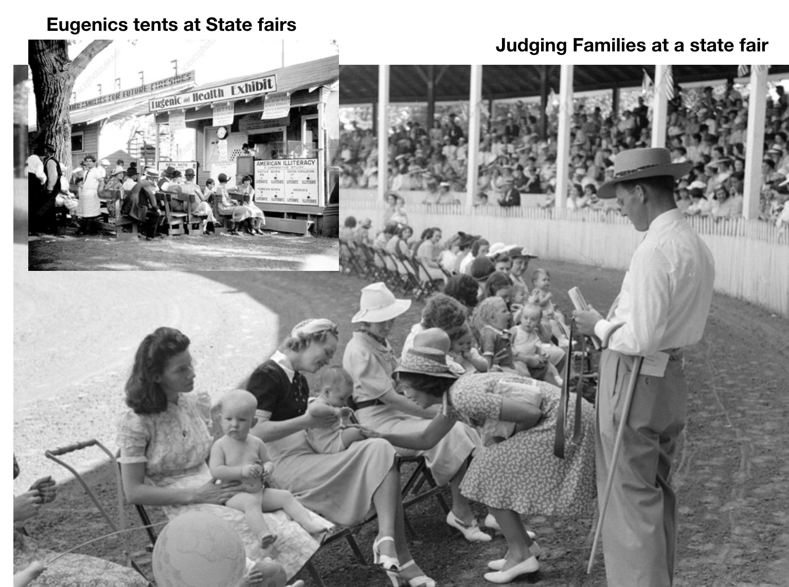
1877, Richard Dugdale, The Jukes: A study in Crim Pauperism, Disease and Heredity
https://eugenicsarchive.ca/discover/timeline/51509ab5a4209be523000006
1912, Henry Goddard, The Kallikak Family: A study in the Heredity of Feeble-mindedness
https://eugenicsarchive.ca/discover/timeline/53246c10132156674b00025e
Madison Grant’s, The Passing of the Great Race
https://eugenicsarchive.ca/discover/timeline/53eea903803401daea000001
a brief word to express the science of improving stock, which is by no means confined to questions of judicious mating, but which, especially in the case of man, takes cognizance of all influences that tend in however remote a degree to give to the more suitable races or strains of blood a better chance of prevailing speedily over the less suitable than they otherwise would have had (Galton, 1883, p.17)
Basic Eugenics Program
Testing: Measure everything you can about people to identify their fitness
Positive eugenics: Encourage the “good” people to breed
Negative eugenics: find ways to stop “unfit” people from breeding, so they eliminate themselves over generational time
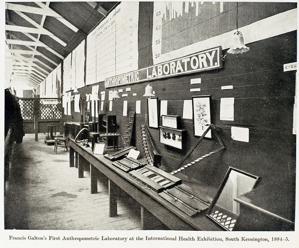
Statistician who invented the correlation coefficient, Pearson’s \(r\)
Galton’s protege, took over the Galton Chair of Eugenics at University of London when Galton died
Founded Annals of Eugenics
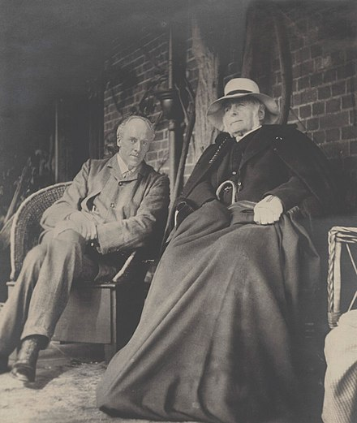
Pearson & Moul (1925)
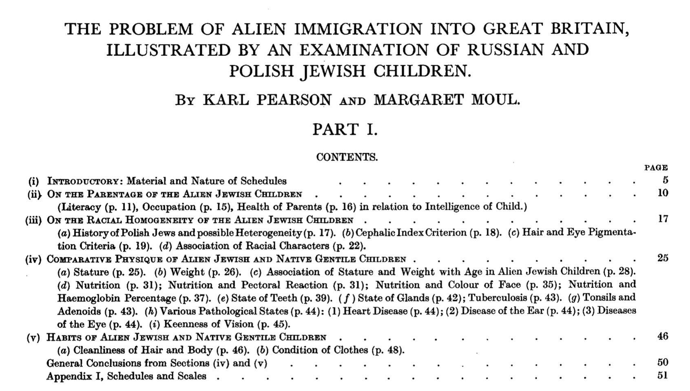
Nazi Atrocities
Involuntary institutionalization and forced sterilization (Many US States legalized these practices)
Anti-miscegenation laws and/or selective intermarriage to “whiten” indigenous groups
Racial segregation policies
Education: Standardized testing, IQ testing, gifted education programs, residential schools
Personnel Selection: Massive IQ testing to answer questions like, who should be sent to the front to die? Who should be an officer?
Eugenicists in positions of power (Presidents, Elected Officials, Government Funding Agencies, University Presidents, Society Presidents, Faculty members, Prominent members of society at large).
Yakushko, O. (2019). Eugenics and its evolution in the history of western psychology: A critical archival review. Psychotherapy and Politics International, 17(2). https://doi.org/10/gg3hsf
Thus, it was American psychology, drawing on British evolutionary and eugenic developments, that became a key force in further expanding eugenic focus in both the discipline and society, including through specific emphasis on what constituted a “healthy” human being.
A review of the official publications of American eugenic societies reveals that 31 presidents of the American Psychological Association between 1892 (Stanley G. Hall’s presidency) and 1947 (Carl Rogers’s presidency) were publicly listed as leaders of various eugenic organizations. Numerous other American psychology leaders, while not listed in these eugenic leadership rosters, nevertheless produced or openly supported eugenic works. For example, S. Franz (APA president in 1920) and J. Dashiell (APA president in 1938), while not listed as eugenic leaders, published numerous positive reviews of eugenic works with titles such as “The Field of Eugenic Reform”.
M. Washburn, APA president in 1921, one of few female APA presidents, not only published positive reviews of eugenic books but also produced studies on supposed differences in national character showing the “striking national difference” apparently found between Jewish participants’ lack of empathy in contrast to their non‐Jewish counterparts (Washburn, 1923, p. 429).
APA gives the E. L. Thorndike Career Achievement Award to recognize achievements in educational psychology; the Granville Stanley Hall Award for achievements in Developmental Psychology; and the Robert M. Yerkes Award for achievements in Military Psychology by non-psychologists.
The Association for Psychological Sciences (APS) gives the James McKeen Cattell Fellow Award for contributions to applied research
The Society for Experimental Psychology gives the Howard Crosby Warren Medal for outstanding achievement in experimental psychology.
https://www.apa.org/about/policy/racism-apology
https://www.apa.org/about/apa/addressing-racism/historical-chronology

CATTELL, J. McK. (1890). V.—MENTAL TESTS AND MEASUREMENTS. Mind, os-XV(59), 373–381. https://doi.org/10/dhn9nc

Read chapter 4 Intelligence testing from the textbook.
Watch the next mini-lecture in for this learning module, and then complete quizzes and assignments of your choice